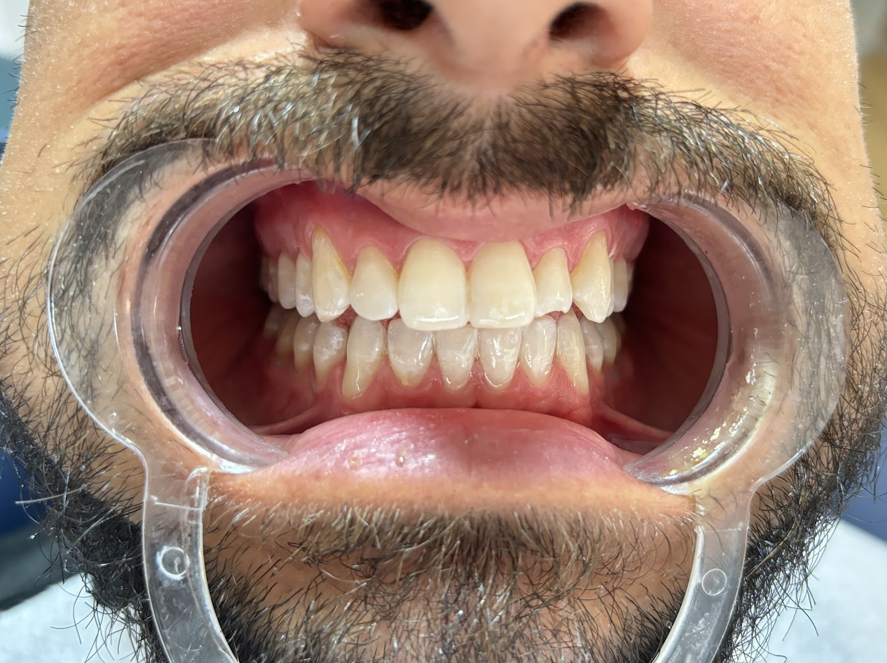
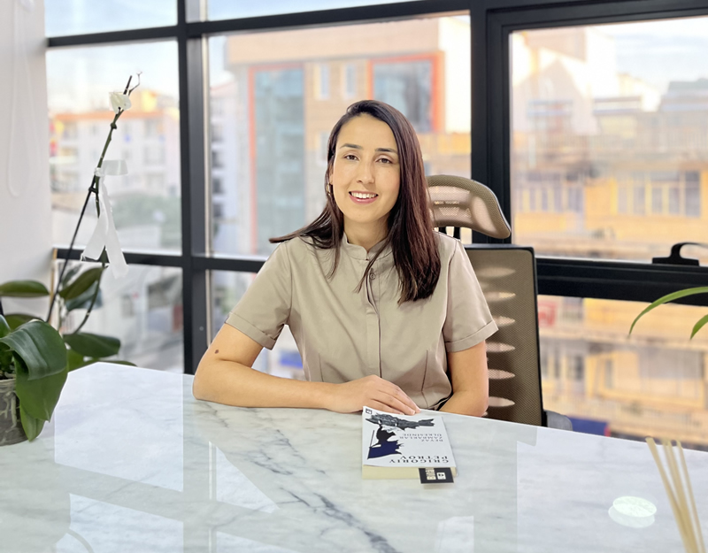
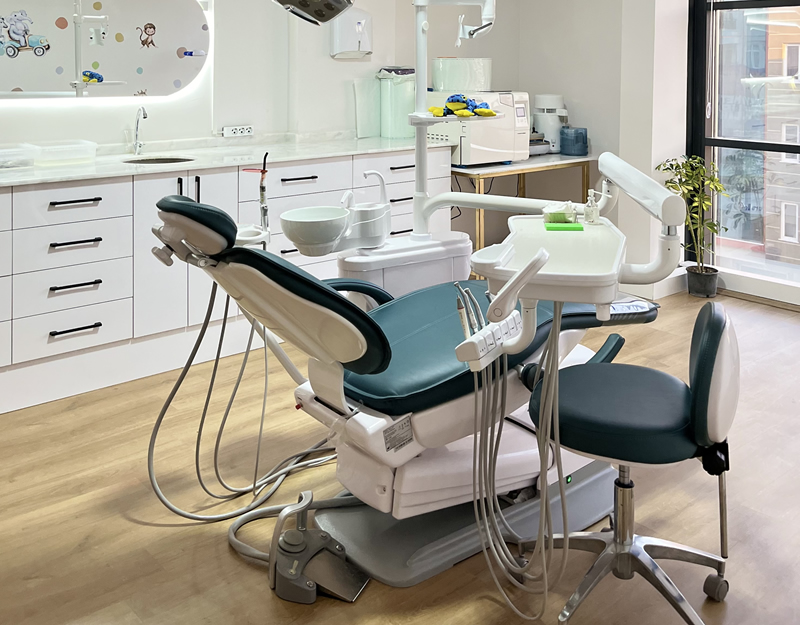

Serik ,Belek,Kadriye Diş hekimi Havva yaman için özel hazırlandı
Dt. Havva Yaman için 3 site tasarımı, hepsi çalışır hâlde
Google'daki gerçek bilgileriniz, fotoğraflarınız ve saatlerinizle hazırladık. Üç tasarım üç farklı yerleşimde; telefonunuzdan açıp araçları deneyin, beğendiğinizi söyleyin, kendi alan adınızla yayına alalım.

Seçenek 1 · Prestij
Vitrin yerleşimi: büyük fotoğraf ve kemer çerçeve
Canlı aç →
Seçenek 2 · Gece
Tam ekran arka planlı, koyu ve iddialı
Canlı aç →
Seçenek 3 · Modern
Uygulama yerleşimi: kartlar, açılır paneller, alt menü
Canlı aç →Sektörünüzde nadir görülen, sizde çalışan özellikler:
- Gülüş önizleme: hasta fotoğrafını yükler, yeni gülüşünün temsilî görünümünü saniyeler içinde görür
- Tedavi ve tatil planlayıcı: yurt dışından gelen hasta için tedavi süresi, seans ve konaklama planı
- Türkçe / İngilizce dil düğmesi; WhatsApp'tan tek dokunuşla randevu talebi
- Google'daki fotoğraflarınız, çalışma saatleriniz ve 360° konum